Cátedra 15: Potenciales Termodinámicos
Los cuatro potenciales termodinámicos — $U$, $F$, $H$, $G$ — se obtienen por transformadas de Legendre de la energía interna. Cada uno es el potencial "natural" para condiciones experimentales distintas.
Temas que cubre
- Energía interna $U(S,V,N)$: potencial fundamental con variables naturales $S$, $V$, $N$
- Transformada de Legendre: cómo cambiar de variables naturales sin perder información
- Energía libre de Helmholtz $F(T,V,N) = U - TS$
- Entalpía $H(S,p,N) = U + pV$: natural para procesos a presión constante
- Energía libre de Gibbs $G(T,p,N) = H - TS = F + pV$
- Las cuatro relaciones de Maxwell a partir de los cuatro potenciales
Conceptos clave
Transformada de Legendre
Intercambia una variable extensiva por su conjugada intensiva sin perder información termodinámica. Ejemplo: $F = U - TS$ intercambia $S$ (extensiva) por $T$ (intensiva), pasando de variables naturales $(S,V,N)$ a $(T,V,N)$.
Entalpía $H$
$H = U + pV$ tiene variables naturales $(S,p,N)$. A presión constante, $\Delta H = Q_p$: el calor absorbido a $p$ fija es directamente la variación de entalpía. Útil en reacciones químicas a presión atmosférica.
Energía de Gibbs $G$
$G = H - TS$ tiene variables naturales $(T,p,N)$. Es la condición de equilibrio a $T$ y $p$ constantes: $G$ es mínimo en el equilibrio. Determina la dirección de reacciones y transiciones de fase a condiciones de laboratorio.
Relaciones de Maxwell
Cada potencial genera una relación de Maxwell por igualdad de derivadas cruzadas. Las cuatro son: $(\partial T/\partial V)_S = -(\partial p/\partial S)_V$; $(\partial T/\partial p)_S = (\partial V/\partial S)_p$; $(\partial S/\partial V)_T = (\partial p/\partial T)_V$; $(\partial S/\partial p)_T = -(\partial V/\partial T)_p$.
Fórmulas fundamentales



Qué hay que entender
- La elección del potencial correcto depende de qué variables están fijas: usa $F$ si $T$, $V$, $N$ fijos; $G$ si $T$, $p$, $N$ fijos; $H$ si $S$, $p$ fijos (poco común); $U$ si $S$, $V$, $N$ fijos (sistema aislado).
- $G = N\mu$ es una consecuencia de la extensividad: $G$ es la única combinación de potencial con variables naturales $(T,p)$ que es extensiva, lo que obliga $G \propto N$.
- Las relaciones de Gibbs-Helmholtz son muy útiles en experimentos: miden $G$ o $F$ en función de $T$ y obtienen $H$ o $U$ sin necesidad de medir directamente $S$.
- Las relaciones de Maxwell son identidades exactas — no asumen modelo microscópico alguno. Se aplican a cualquier sistema en equilibrio.